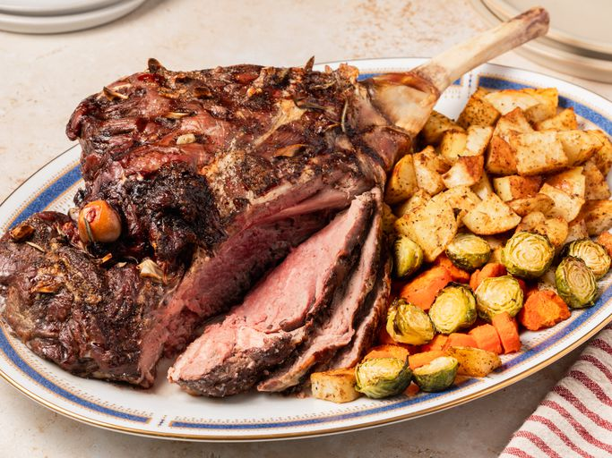

Lamb roast

A roast leg of lamb (delicous!).
Ingredients:
- 5 pounds leg of lamb
- 4 cloves garlic, sliced
- salt, pepper and roasemary
Steps:
- Gather all ingredients. Preheat the oven to 350 degrees F (175 degrees C).
- Cut deep slits on the top of leg of lamb every 3 to 4 inches; push slices of garlic down into the slits. Generously season with salt and pepper.
- Place lamb on a roasting pan; arrange several sprigs of fresh rosemary under and on top of the lamb.
- Roast in the preheated oven for 1 3/4 to 2 hours, or until an instant-read thermometer inserted into the center of the lamb reads at least 135 degrees F (57 degrees C) for medium-rare to medium doneness.
- Cover lamb with aluminum foil and let rest for at least 10 minutes before carving.
- Serve with your favorite sides (potatoes, carrots & brocolli etc...), enjoy!